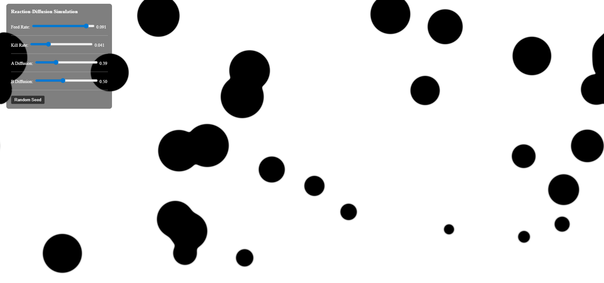
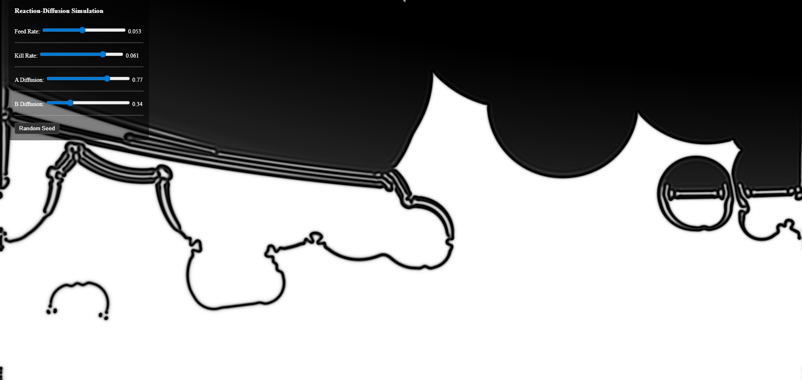

Reaction Diffusion Simulation
Objective:
Create a fullscreen fragment shader that implement the Reaction Diffusion algorithm.
It should have controls for the various coefficients of RD and implement
a style option.
Project Images:


Explaination:
Much of the project is standard reaction diffusion, so I will focus on the extra features and aesthetic choices.
The seed pattern I went with is multiple random position and size circles scattered around.
This enables interesting patterns to emerge across the whole canvas.
Those circles expand or contrast, absorbing or splitting other circles along the way.
The randomize button allows users to easily generate a different seed pattern while maintaining the current control coefficients.
With it, users can explore different starting conditions and/or a set of coefficients.
For the option, I chose style map and made different sections of the canvas to have feed and kill variations.
When the users change the coefficients, they may see parts of the canvas to have contrasting and visually striking patterns.
The theme of the project is black and white, which provides the sharpest contrast between chemical A and B.
The minimalist color scheme allows users to focus on the interaction between A and B.
The animation is sped up 10 times for the thrill of fast evolving patterns.
Users can see how their interaction changes the canvas immediately and feel a sense of control.
Feedback:
“This is super cool and fun to play with.
I like having the "Random seed" button a lot.
Im also glad you sped up the simulation a lot becayse it makes the changes from the slider way easier to see in real time.
Each slider is able to make noticeably different outcomes which kept it interesting.
I also really liked how I could hit the random seed button again after adjusting the values to see how those settings affected a brand new pattern.
Super cool!”
- Ellie Scharpf
I am glad to see people like the random seed button.
They want to see how a specific set of settings affect different patterns.
I was reminded by the professor to speed up the animation and indeed the sped up version is more attractive.
It allows people to see their changes quickly and and the patterns feel more exiting.
I am surprised they praise the control sliders;
the values of the RD coefficients are pretty standard and I didn’t offer much customization.
I don’t see any critisms, so either they are being nice, or my work is very standard.